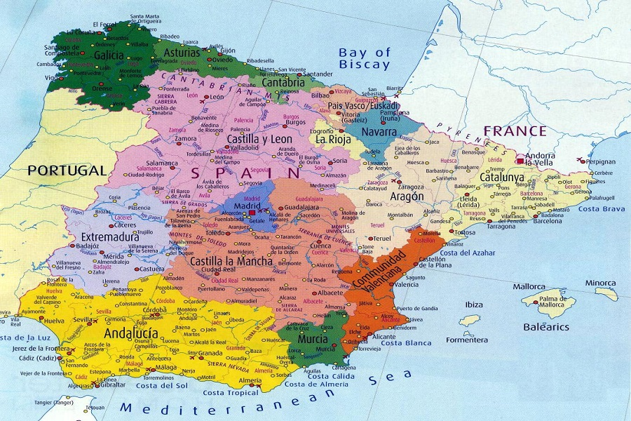
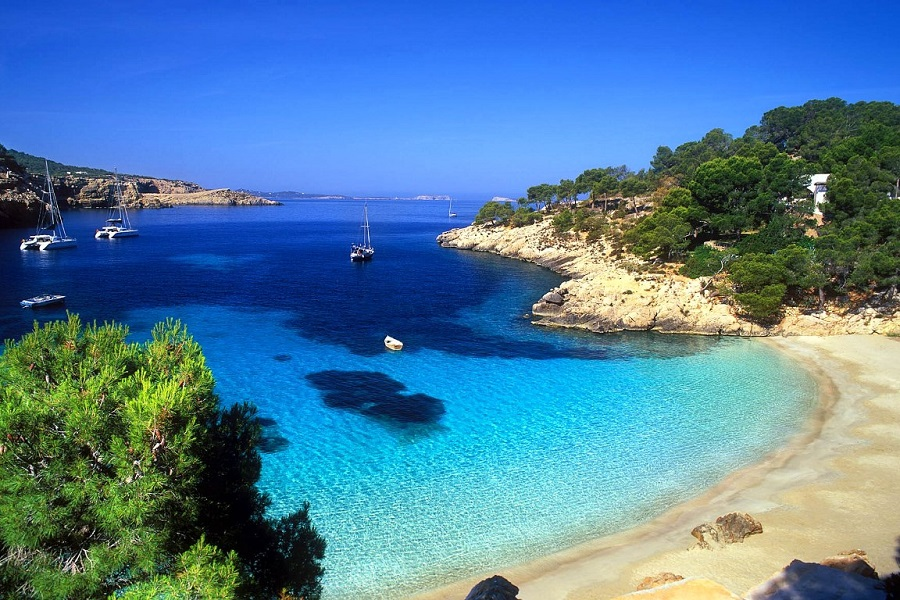

Іспанія - держава у Південній Європі
Іспанія - красива, пристрасна, спекотна та різноманітна країна. Кожен знаходить тут для себе щось своє, особливе. Мавританська архітектура Кордови, мальовничі Піренеї, надзвичайні ландшафти Галісії та Арагону, сотні пляжів, відмічених "Блакитний прапор" , — Іспанія поєднує в собі всі принади Середземноморських країн. Це одне з самих відвідуваних та загадкових місць у світі.
Скільки б разів ви не приїжджали до Іспанії, відвідати всі визначні пам'ятки просто нереально. У країні 17 регіонів, де кожне місто та провінція мають свої культурні традиції та особливості. Тут історично переплелися культура та духовність трьох релігій, що по черзі панували в Іспанії — іслам, християнство та іудаїзм. Кожна їх залишила на іспанської землі свій слід, як чудових пам'яток архітектури. Серед найвідоміших — Мескіта в Кордові та палац Альгамбра у Гранаді, сотні кафедральних соборів та королівських замків.
Іспанія подарувала світові знаменитих майстрів живопису епохи Відродження: Дієго Веласкеса, Ель Греко, Франсіско Гойю. Роботи цих видатних художників зберігаються у Музеї Прадо у Мадриді. Любителі творчості Пабло Пікассо можуть відвідати однойменний музей у Барселоні.
Тим же, кому близький сюрреалізм Сальвадора Далі, варто неодмінно вирушити до Фігерасу, де знаходиться театр-музей, присвячений життю та творчості цього неперевершеного художника. Обов'язково відвідайте Іспанію, в цій країні, як ніде, відчувається свобода та відчувається смак життя!
Регіони
- Естремадура;
- Країна Басків;
- Риоха;
- Наварра;
- Мурсія;
- Каталонія;
- Кастилія-Ла-Манча;
- Кастилія і Леон;
- Валенсиія;
- Кантабрія.
Іспанія – країна морська
В Іспанії є великі круїзні порти. Найважливішими з них за обсягом перевезень туристів є порти Барселони, Пальма-де-Майорка, Лас-Пальмас, Санта-Крус-де-Тенеріфе, Малаги, Кадіса, Валенсії та Більбао. Крім того, на кораблі можна дістатися до Канарських та Балеарських островів, Сеути та Мелільї. Нижче наведено зразкові відомості про маршрути, компанії, що здійснюють рейси, та їхню приблизну тривалість.
Пори року
Іспанія є однією з найпівденніших і найспекотніших європейських країн, це середземноморська держава з цілком типовим для цього регіону кліматом. Тут досить тепла зима та помірно спекотне літо, а на всесвітньо відомих курортах, на кшталт Канарських островів, температура повітря практично ніколи не опускається нижче за позначку +15°C. У центральних регіонах країни, відокремлених від моря та океанського узбережжя гірськими масивами, можна спостерігати типовий континентальний клімат, який, однак, відрізняється вищою амплітудою температур, сухим і дуже спекотного літа, і навіть морозної зими. Щоправда, морози в Іспанії зовсім не суворі, найнижчі температури фіксуються в горах — і навіть там стовпчик термометра не опускається нижче за вісім градусів морозу. Взагалі ж, у в середньому, взимку температура коливається від +2 до +5°C. Але, в той же час, якщо літні дні у центрі країни набагато спекотніше, ніж у прибережних районах, то ночі тут досить прохолодні, з денних +32 ° C вночі стовпчик може опуститися до +15 °C.